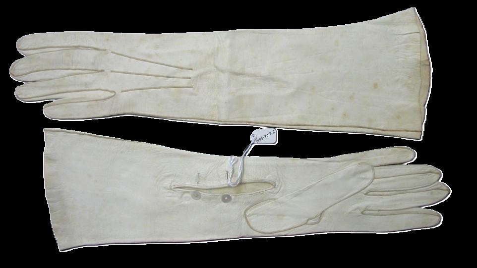
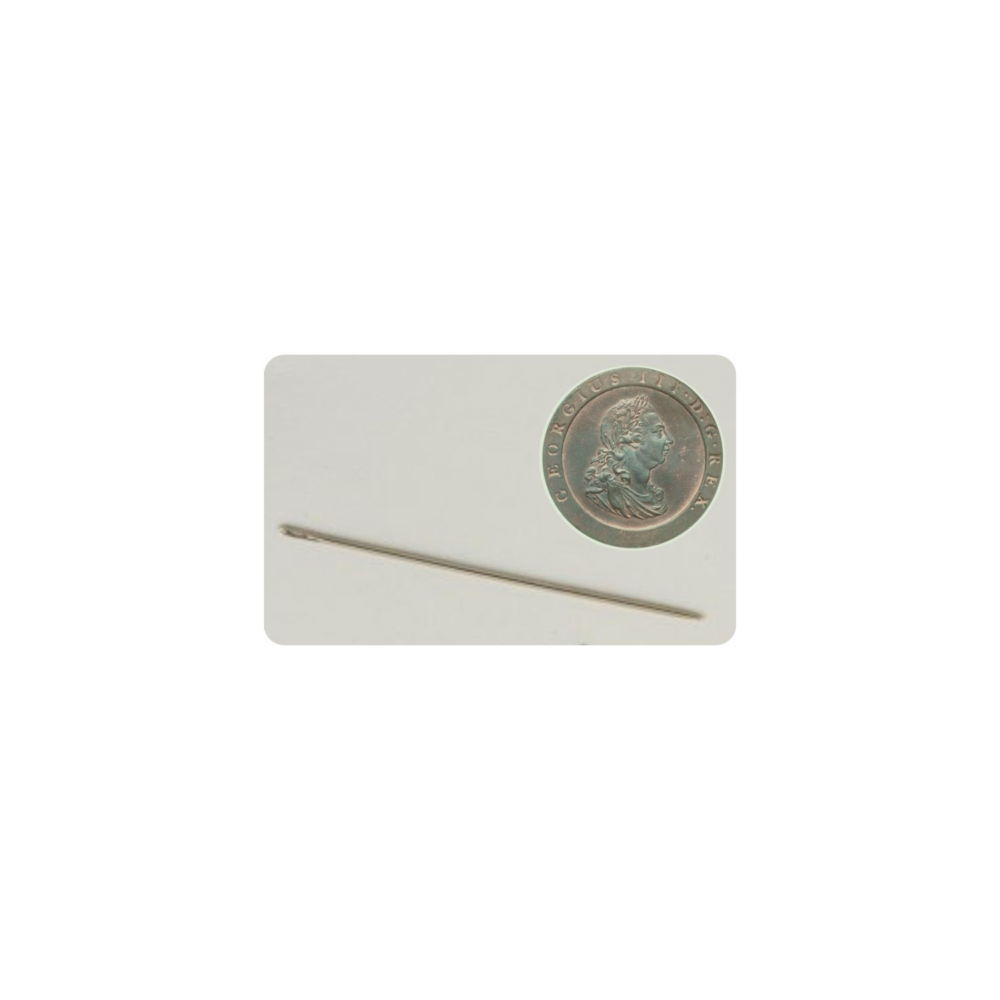

Radius Museum
Two artefacts, held in time.
Let's take a look together.
Gloves

A pair of ladies’ leather gloves, made around eighteen thirty to eighteen fifty.
Made from fine leather, often lamb or kid, the material is thin and supple, softening slightly with wear. This allowed the gloves to sit close to the skin, making them well suited to everyday use. Each glove was cut by hand and stitched finger by finger, using fine thread, with decorative stitching across the back. The shape narrows gently at the wrist, designed to follow the form of the hand. The work required good light, steady hands, and patience.
Gloves like these were worn for walking, visiting, church, and travel — not only practical, but a subtle sign of refinement. In these gloves lives the quiet skill of everyday life — not only the hands that wore them, but the hands that made them.
Needle

Small, sharp, and easily missed, with a tiny eye for thread. It fits between finger and thumb, and would have been used thousands of times.
Made from hardened steel and carefully polished, it could pass smoothly through thin leather. Drawn through the material again and again, it was used to sew gloves by hand — repetitive and precise.
Most often, this work was done by women at home, fitting paid sewing around daily responsibilities. This needle reflects the unseen labour between raw material and finished artefact.